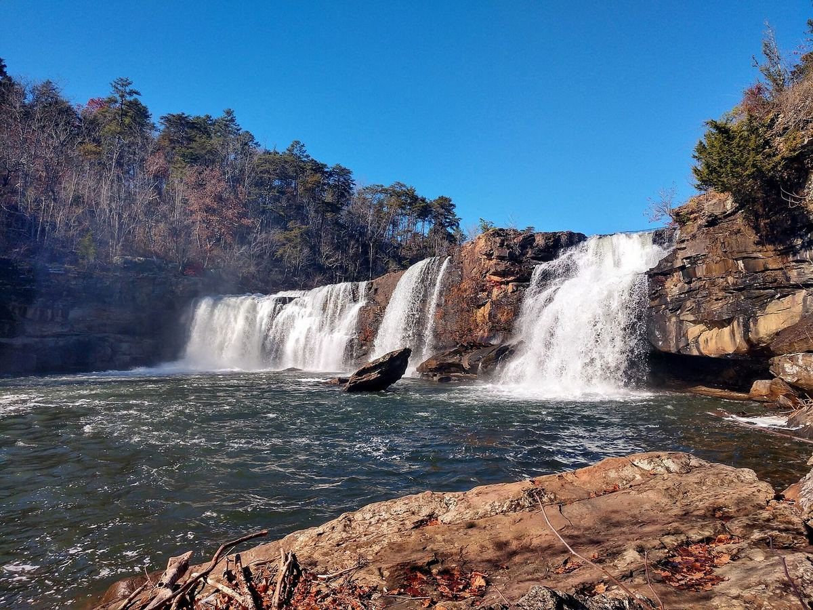

Little River Canyon, Alabama
Little River Falls after the rain
After a wet week, the 45-foot falls turn from a gentle curtain into a roar you can feel in your chest.
The overlook is a short walk from the parking area, which makes this one of the easiest big waterfalls to reach. Come early on a weekday and you may have the rocks to yourself.
Stay safe near the water
The rocks by the river are slick, and the current above the falls is stronger than it looks. Enjoy it from the overlook and the marked paths.